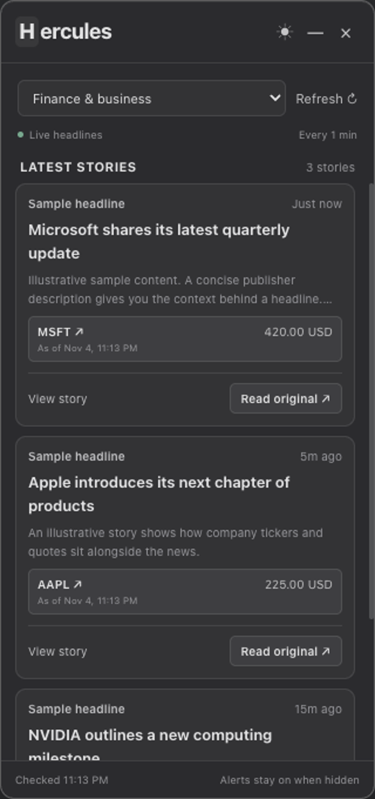
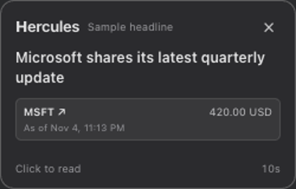
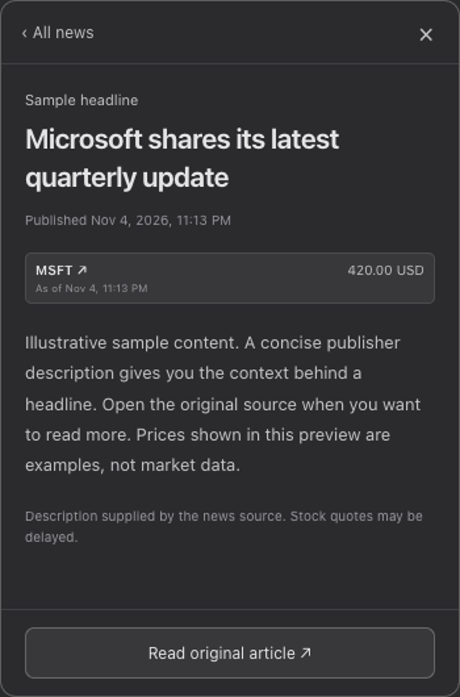

A quiet companion for macOS
Market news.
At the edge
of your day.
A small place for the stories that move markets. Catch a headline, check the related stock, and go straight to the source.
Apple silicon · Developer preview · Hosted news connection included
A closer look
Made to stay out of the way
A glance.
A little more.
The original.
Keep your focus where it belongs. Hercules lives in the menu bar and brings new stories to the edge of your screen.


News on your terms.
Checks your connected news providers every 60 seconds. Start with finance and business, then switch categories when your curiosity takes you elsewhere.
The stock behind the story.
Related tickers sit beside quotes and their timestamps. Prices come through the hosted service and may be delayed or unavailable. Open a ticker to see more.
Always a way to the source.
Skim the publisher’s description in a separate view, then open the original story in your browser. Your feed is waiting back in the menu bar.
See the flow
From headline to source.
A short interface walkthrough using sample content.
Download videoA project in progress
Small app.
Open beginnings.
Hercules is an early personal project, built with Electron, React, and a Python backend. The code is open to explore, run, and improve.
Before you download
Download the desktop preview and open it from Applications. It connects to the hosted Hercules service automatically—no backend setup or personal API keys needed. An internet connection is required.
The macOS preview is ad-hoc signed and not notarized. Release availability and installation details are listed on GitHub.